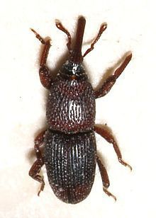

راهنمای جامع و تخصصی سمپاشی انبارها و سیلوها | کنترل آفات انباری
مقدمه: تهدید پنهان در انبارهای مواد غذایی
انبارها و سیلوها، قلب تپنده صنعت کشاورزی و تأمین مواد غذایی هستند. هزاران تن غلات، حبوبات، خشکبار و سایر محصولات استراتژیک در این مکانها ذخیره میشوند تا در زمان نیاز مورد استفاده قرار گیرند. اما این حجم عظیم از مواد غذایی، همواره در معرض تهدید جدیای به نام آفات انباری قرار دارد. آفاتی که میتوانند در سکوت کامل، سرمایههای میلیاردی را نابود کنند و سلامت مصرفکنندگان را به خطر بیندازند.
آفات انباری به گروهی از حشرات، کنهها و جوندگان اطلاق میشود که در مراحل مختلف زندگی خود (لاروی و بالغ) به محصولات کشاورزی ذخیرهشده حمله میکنند و از آنها تغذیه مینمایند . این آفات در منازل، سیلوهای بزرگ، کشتیها و هواپیماهایی که برای حمل و نقل محصولات کشاورزی استفاده میشوند، قابل مشاهده هستند .
در این مقاله جامع از شرکت سمپاشی نانوفناوران بهداشت تهران، به بررسی کامل آفات انباری، روشهای پیشگیری و مهمتر از همه، اصول تخصصی سمپاشی انبارها و سیلوها میپردازیم تا بتوانید از سرمایه خود در برابر این تهدید خاموش محافظت کنید.
بخش اول: آفات انباری چیست و چرا خطرناک هستند؟
تعریف آفات انباری
آفات انباری به دستهای از حشرات و جوندگان گفته میشود که در محیطهای نگهداری محصولات کشاورزی زندگی کرده و از آنها تغذیه میکنند . این آفات در هر جایی که مواد غذایی خشک مانند غلات، حبوبات، آجیل، خشکبار و حتی ادویهجات نگهداری شوند، میتوانند یافت شوند و در صورت عدم کنترل به موقع، کل انبار را آلوده کنند.
چرا آفات انباری خطرناک هستند؟
آفات انباری نهتنها از نظر اقتصادی خسارتهای سنگینی به بار میآورند، بلکه تهدیدی جدی برای سلامت انسان محسوب میشوند:
| نوع خسارت | توضیح |
|---|---|
| خسارت کمی | آفات با تغذیه از مواد غذایی، وزن و حجم آنها را کاهش میدهند و باعث فساد فیزیکی محصول میشوند |
| خسارت کیفی | بسیاری از آفات با ترشح آنزیمها و فضولات خود، باعث تغییر طعم، بو و رنگ مواد غذایی میشوند و آنها را غیرقابل مصرف میکنند |
| خطرات بهداشتی | فضولات، پوستاندازی و اجساد آفات در مواد غذایی میتواند باعث ایجاد انواع حساسیتها، مسمومیتها و بیماریهای گوارشی شود |
| آسیب به بستهبندی | جوندگان با جویدن بستهبندیها، باعث نفوذ حشرات و آلودگی بیشتر میشوند |
| خطر آتشسوزی | جوندگان با جویدن سیمهای برق در انبارها، خطر آتشسوزی را افزایش میدهند |
بخش دوم: مهمترین آفات انباری در ایران

در این بخش به معرفی مهمترین آفات انباری که در انبارها و سیلوهای ایران یافت میشوند میپردازیم:
۱. سرخرطومی برنج (شپشک برنج)
نام علمی: Sitophilus oryzae
این آفت یکی از مهمترین آفات برنج است که در صورت عدم رعایت نکات انبارداری، میتواند خسارت کامل به برنج وارد کند . این آفت چه در مراحل اولیه زندگی و چه در مراحل بلوغ برای برنج خسارتزا بوده و به گندم، جو و ذرت نیز حمله میکند. این حشره دارای سری خرطومی شکل، به رنگ قهوهای تیره و به طول ۳ تا ۵ میلیمتر است و میتواند پرواز کند.
چرخه زندگی: شپشک ماده روزانه ۴ تخم در مغز دانههای غلات میگذارد. مراحل رشد تا قبل از تبدیل شدن به حشره بالغ، داخل دانه برنج صورت میگیرد؛ به همین دلیل معمولاً تا قبل از ایجاد شپشک بالغ، متوجه وجود این آفت در برنج نمیشوید .
۲. شپشک دندانهدار برنج
این آفت در بین حبوبات و برنج یافت میشود و در مراحل لاروی و کمی در مراحل بلوغ به محصولات انباری خسارت وارد میکند . ترجیح غذایی آن حبوبات، برنج، عدس و گندم است. در صورت عدم وجود این محصولات، به غلات دیگر مثل ماکارونی و خشکبار حمله میکند . فضولات این حشره در محصولات انباری میتوانند سبب ایجاد انواع حساسیتها شوند.
۳. شبپره هندی (بید حبوبات)
نام علمی: Plodia interpunctella
این آفت در منازل و انبارها دیده میشود. مراحل لاروی آن به همه نوع مواد غذایی خشک و نیمهخشک حمله میکند و اگر به این موارد دسترسی نداشته باشد، میتواند از الیاف مختلف از قبیل کاغذ و پارچه تغذیه کند . این حشره پس از بلوغ به شبپره تبدیل میشود و جذب نور شده و در شب آشکار میگردد.
۴. سوسک کشیش
این حشره از دانههای غلات تغذیه میکند و دامنه میزبانی بالایی دارد. مرحله لاروی و بلوغ این آفت به دانههای غلات با نشاسته بالا مثل گندم، ذرت و برنج حمله میکنند . از علائم خسارت این حشره بر روی غلات، سوراخهای متعددی است که در اثر تغذیه آفت به وجود آمده است.
۵. سوسک چرم و فرش
ترجیح غذایی این حشره به پوست خام که دارای پروتئین باشد، لاشه حیوانات، استخوان، دانههای غلات و شفیره کرم ابریشم است . این حشره در سال یک نسل و در صورت مناسب بودن شرایط دمایی و محیطی تا دو نسل تولید میکند.
۶. سوسک سیاه قالی
حالت لاروی این حشره میتواند خسارت هنگفتی به فرآوردههای خشک از قبیل خز، منسوجات پشمی، ماهی خشک، پر، پوست، مو و فرش وارد کند . منسوجاتی که به مدت طولانی در کمدها یا انبارها نگهداری شوند و مراقبتی از آنها به عمل نیاید، مورد حمله این آفت قرار میگیرند.

۷. موشها و جوندگان
موشها به سبب داشتن دندانهایی که همواره در حال رشد هستند، مجبور به جویدن اجسام مختلف از قبیل محصولات انباری هستند و به این طریق سبب ایجاد خسارت میشوند . فضولات و موی این جانوران سبب کاهش کیفیت محصولات و ایجاد مشکلاتی از قبیل حساسیتها یا بیماریهای متعدد میشود .
بخش سوم: اصول طراحی و ساخت انبار مقاوم در برابر آفات
پیشگیری همواره بهترین راهکار در مقابله با آفات انباری است. طراحی و ساخت اصولی انبار، نقش کلیدی در جلوگیری از ورود و استقرار آفات دارد :
۱. ویژگیهای سازهای انبار استاندارد
- کف انبار: باید بتنی، سالم و غیرقابل نفوذ در برابر آب و رطوبت باشد
- سقف و دیوارها: باید سالم، صاف و فاقد درز و شکاف باشند
- سیستم تهویه: انبار باید دارای تهویه مناسب بوده و پنجرههای آن دارای توری و غیرقابل نفوذ برای آفات باشد
- قابلیت سمپاشی: انبار باید قابل سمپاشی و ضدعفونی بوده و دیوارهای آن با رنگ سفید شده باشد
۲. اصول چیدمان محصولات در انبار
- فاصله از دیوار: محصولات انباری باید حداقل نیم متر از دیوارها فاصله داشته باشد
- استفاده از پالت: در زیر کیسهها و جعبهها باید از پالتهای چوبی یا فلزی استفاده شود
- جلوگیری از اختلاط: از مخلوط کردن محصولات انبار شده قدیمی با جدید خودداری گردد
- محوطه بیرونی: فضای حداقل ۱۰ متری اطراف انبار باید اسفالت یا بتن شود تا از رشد گیاهان و پناهگاه آفات جلوگیری شود
بخش چهارم: روشهای پیشگیری از آفات انباری
۱. کنترل نقاط ورود
- بستن تمام شکافها و درزهای دیوارها
- نصب توری روی پنجرهها و دریچههای تهویه
- نصب درپوشهای مناسب روی دربها
- شناسایی و رفع تمام نواقص فنی مانند سوراخ بودن سقف، شکستگی شیشهها، خرابی دربها و ترکخوردگی کف
۲. مدیریت بهداشت انبار
- تمیز نگهداشتن کف، دیوارها و تجهیزات موجود در انبار
- ضدعفونی انبار پس از خروج محصولات قدیمی، قبل از ورود محصولات جدید
- حذف خردهریزها و زبالهها
- حذف علفهای هرز در آمده از بین بلوکهای کف و دیوار
۳. کنترل دما و رطوبت
- استفاده از سیستمهای تهویه مناسب برای تنظیم حرارت و رطوبت داخل انبار
- جلوگیری از انبار کردن محصولات با محتوای رطوبتی بالا
۴. بازرسی و پایش منظم
- بازرسی روزانه در ساعات خنک (غروب یا سحرگاه)
- بازرسی کیسهها، جعبهها و همچنین دیوارها و کنارههای انبار
- استفاده از تلههای چسبنده، تلههای نوری و تلههای حاوی فرمون برای شناسایی زودهنگام آفات
بخش پنجم: روشهای تخصصی سمپاشی انبار و سیلو
روشهای فیزیکی و غیرشیمیایی
۱. استفاده از حرارت (دمای بالا)
استفاده از آب گرم و بخار آب گرم برای شستشوی دیوارهها و کف ساختمان توصیه میشود . دمای بالاتر از ۴۶ درجه سانتیگراد با حذف واکس از کوتیکول حشرات، باعث از دست دادن سریع آب بدن و مرگ آنها میشود. اما دمایی که توصیه میشود دمای بالای ۵۲ درجه سانتیگراد است تا بتوان اطمینان داشت که حشرات در تمام مراحل زندگی (حتی تخم و شفیره) از بین میروند .
۲. تلهگذاری
- تلههای چسبی: یکی از روشهای مجاز در کارخانههای تولیدکننده مواد غذایی که غیر سمی و بدون بو هستند
- تلههای فرمونی: استفاده از فرمونهای مصنوعی برای جذب و به دام انداختن آفات
روشهای شیمیایی تخصصی
۱. گازدهی با فسفین
گازدهی یکی از مؤثرترین روشهای ضدعفونی انبارها و سیلوهاست. ترکیبات فسفید آلومینیوم یا منیزیم ۵۶ درصد برای این منظور استفاده میشوند .
شرایط بهینه گازدهی: بهترین شرایط برای گازدهی با فسفین در رطوبت ۶۰ درصد و دمای ۲۰ درجه سانتیگراد است . گازدهی نباید در دمای کمتر از ۱۵ درجه سانتیگراد انجام شود.
نکات مهم: در صورت مسدود نبودن کامل انبار و یا توزیع ضعیف گاز، حشرات هدف در معرض میزان کافی گاز فسفین قرار نمیگیرند .
۲. سمپاشی تماسی
در این روش از آفتکشهای مختلف برای کنترل آفات موجود در انبار استفاده میشود. این آفتکشها ممکن است به صورت امولسیونها، پودرها، گردها و سوسپانسیون استفاده شوند .

نکته مهم: در کارخانههای تولید مواد غذایی، فقط استفاده از سموم بهداشتی و بدون خطر مجاز است . سمومی که در این محیطها بکار میروند باید توسط سازمان بهداشت تأیید شوند .
بخش ششم: اقدامات قبل و بعد از سمپاشی انبار
قبل از سمپاشی
- تخلیه کامل انبار از محصولات (در صورت امکان)
- در غیر این صورت، پوشش کامل و بستهبندی کلیه محصولات و مواد غذایی موجود در انبار
- بستن تمام درزها، شکافها و هر راه نفوذ به انبار
بعد از سمپاشی
- علامتگذاری مکانهای سمپاشی و طعمهگذاری شده برای آگاه کردن کارکنان
- تهویه کامل محیط
- جمعآوری لاشه آفات و تمیز کردن کامل انبار
بخش هفتم: هزینه سمپاشی انبار و سیلو
هزینه سمپاشی انبار به عوامل زیر بستگی دارد. برای دریافت مشاوره رایگان و استعلام دقیق هزینه، با کارشناسان ما تماس بگیرید:
| عامل | تأثیر بر هزینه |
|---|---|
| مساحت انبار | هرچه متراژ بزرگتر باشد، هزینه بیشتر است |
| نوع محصولات | انبارهای مواد غذایی نیاز به سموم تخصصیتر دارند |
| شدت آلودگی | آلودگی شدید نیاز به عملیات گستردهتری دارد |
| نوع آفات | هر آفت نیاز به روش کنترل خاص خود دارد |
| نوع روش سمپاشی | گازدهی، سمپاشی تماسی یا ترکیبی |
بخش هشتم: سوالات متداول درباره سمپاشی انبار
چند بار در سال باید انبار سمپاشی شود؟
توصیه میشود انبارها حداقل سالی دو بار (ترجیحاً در فصل بهار و پاییز) سمپاشی شوند. انبارهای مواد غذایی ممکن است نیاز به سمپاشی فصلی داشته باشند. همچنین پس از خروج محصولات قدیمی و قبل از ورود محصولات جدید، ضدعفونی انبار ضروری است .
آیا سمپاشی انبار برای محصولات غذایی خطرناک است؟
خیر، سموم استفادهشده توسط شرکت نانوفناوران با رعایت کامل استانداردهای بهداشتی انتخاب میشوند. قبل از سمپاشی، تمام مواد غذایی پوشانده یا از محیط خارج میشوند تا هیچگونه تماسی با سموم نداشته باشند .
چه مدت بعد از سمپاشی انبار برای حضور افراد ایمن است؟
بسته به نوع سموم استفادهشده، معمولاً ۴ تا ۶ ساعت پس از سمپاشی، محیط برای حضور افراد ایمن است. در روش گازدهی، زمان بیشتری نیاز است .
آیا خودمان هم میتوانیم انبار را سمپاشی کنیم؟
سمپاشی انبار به دلیل پیچیدگیهای خاص، نیاز به تجهیزات پیشرفته، دانش تخصصی و سموم مجاز دارد. استفاده نادرست از سموم میتواند برای سلامتی و محصولات خطرناک باشد. انجام سمپاشی توسط کارشناسان مجرب توصیه میشود .
آفات انباری چگونه وارد انبار میشوند؟
آفات انباری از طریق محصولات آلوده، شکافهای دیوار و سقف، دربها و پنجرهها و همچنین از طریق جوندگان وارد انبار میشوند .
نتیجهگیری
انبارها و سیلوها به عنوان قلب صنعت کشاورزی و تأمین مواد غذایی، نیازمند بالاترین سطح بهداشت و ایمنی هستند. آفات انباری با ایجاد خسارتهای کمی و کیفی، میتوانند سرمایههای میلیاردی را نابود کنند و سلامت مصرفکنندگان را به خطر بیندازند. تشخیص زودهنگام، پیشگیری اصولی و استفاده از روشهای تخصصی سمپاشی، کلید موفقیت در کنترل این آفات است.
شرکت سمپاشی نانوفناوران بهداشت تهران با بیش از یک دهه تجربه در زمینه سمپاشی انبارها، سیلوها و مراکز نگهداری محصولات کشاورزی، آماده ارائه خدمات تخصصی و تضمینی به شماست. تیم کارشناسان ما با شناسایی دقیق نوع آفات، استفاده از سموم استاندارد و مجاز، و رعایت کامل نکات ایمنی، محیطی امن، بهداشتی و عاری از آفات را برای انبار شما به ارمغان میآورند.
🚀 همین حالا اقدام کنید:
📞 تماس فوری: ۰۹۱۲۰۷۰۵۷۴۶
💬 درخواست مشاوره رایگان: از طریق واتساپ یا ایتا
🔗 مشاهده سایر خدمات: کنترل آفات مسکونی